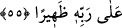

“Senin hakkında iki grup insan helâk oldu: Biri seni aşırı seven, diğeri sana iftirâ
atan yalancı kimse.” Nitekim İnsânü’l-uyûn’da böyle geçmektedir.
et-Te’vîlâtü’n-Necmiyye’de der ki: “Âyetin işâreti şöyledir: İnsan farklı iki cinsten
mürekkeb olarak yaratılmıştır. Sûreti halk âleminden, rûhu emr âlemindendir.
“Allah ona nesep ve sıhriyet yakınlığı vermiştir.” Nesebi rûhunadır. Rûhun intisâbı
da Allah’a ve Rasûlü’nedir. Allah’a intisâbı “ona ruhumdan üflediğim zaman…”
(Sâd, 38/72) âyetinden, Rasûlü’ne intisâbı da “Ben Allah’tanım, mü’minler de
bendendir.”[240] hadisinden anlaşılmaktadır. İşte Allah kullarının seçkinlerini bu
nesebin ehlinden kıldı.
İnsanın sıhriyeti ise sudan yaratılan beşeriyet yönüdür. Nitekim Allah Teâlâ: “Ben
çamurdan bir insan yaratacağım, onu biçimlendirip ona ruhumdan üflediğim
zaman... (Sad, 38/71-72) âyetinde insanın bu iki husûsiyetini bir arada zikretmiş ve
kullarının avâmını bu sıhriyet ehlinden kılmıştır. Onlara galib olan beşeriyet
özellikleridir. Bu özellikler ise hırs, şehvet, hevâ ve gazabdır. Bunlarla insan süflî
derekelere reddolunur. Neseb ehline galib olan ise rûhâniyetin özellikleridir. Bu
özellikler ise şevk, muhabbet, taleb, hilm ve keremdir. Bunlarla insan yüce derecelere
cezbolunur.
“Rabbinin her şeye” iki fırkayı ayrı ayrı iki yolun ehli kılmaya da “gücü yeter.”
Molla Câmî (k.s.) der ki:
Sebep ve illetlerle sana yakın olunamaz
Ezelî fazl ve inâyet olmaksızın elde edilemez
İstenip niyaz edilen her hususta icâbeti umulan yalnız Allah Teâlâ’dır.
55. (Böyle iken müşrikler) Allah’ı bırakıp kendilerine ne fayda ne de zarar
verebilen şeylere kulluk ediyorlar. İnkârcı da Rabbine karşı uğraşıp durmaktadır.
Böyle iken müşrikler “Allah’ı” Allah Teâlâ’ya ibâdet ve kulluğu “bırakıp kendilerine
ne” taptıklarında “fayda ne de” tapmadıklarında “zarar verebilen şeylere kulluk
ediyorlar.” Yâni, asla fayda ve zarar vermek gibi bir özelliği olmayan putlara ve
onların hükmünde olan varlıklara kulluk ediyorlar. Çünkü yaratılan hiç bir şey müstakil
olarak ve bizâtihî fayda ve zarar veremez. Onun için ona ibâdetin, güvenmenin ve
peşinden gitmenin hiçbir faydası yoktur.
“ hayırlara ulaşmak için kendisinden yardım istenilen şey, fayda ve yarar